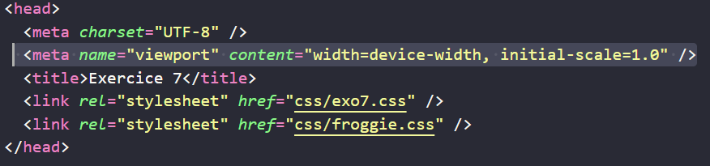
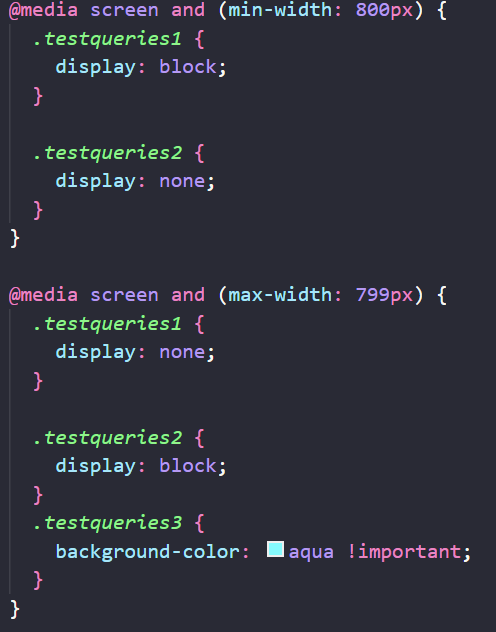

Froggiesplaining :

Dans ce 7ème cours, on découvre Le "Viewport" et les "Media Queries" qui
permettent le "Responsive Web Design".
le VIEWPORT :

content="width=device-width signifie que le viewport prend la largeur
(width) de l'écran (device-width) sur lequel s'ouvre la page, l'espace
d'affichage sera don égale à l'écran du client. initial-scale=1.0
signifie que le zoom de base (initial-scale) prend la valeur 100% afin
d'éviter l'effet de zoom
les MEDIAS QUERIES :
médias:
On peut cibler tous les médias avec all ou en choisir un seul :
- print, pour l'impression du site
- screen, les écrans (PC, laptop, tablettes, smartphones, tv,...)
-
speech, pour les outils permettant de communiquer avec la page par un
système vocal
- All, tous les périphériques (valeur par défaut)
Les propriétés:
-
width : Il s'agit de la largeur de la fenêtre pour laquelle le style
sera appliqué.
-
min-width De la limite vers le haut: pour une limite à 500px, de 500px
à l'infini par exemple.
-
max-width De la limite vers le bas: pour une limite à 500px, de 500 à
0px par exemple.
-
height Il s'agit de la hauteur de la fenêtre pour laquelle le style
sera appliqué.
-
min-height Il s'agit de la hauteur minimale de la fenêtre pour
laquelle le style sera appliqué.
-
max-height Il s'agit de la hauteur maximale de la fenêtre pour
laquelle le style sera appliqué.
-
orientation Il s'agit de spécifier comment on veut afficher la page
selon lorientation: portrait ou paysage. Valeurs possibles: "portrait"
ou "landscape".
-
device-width (PM) Il s'agit de la largeur de l'écran (et non la
fenêtre!) dans lequel s'ouvre le document. On peut utiliser les
préfixes "min-" et "max-" Exemple: media="screen and
(device-width:500px)"
-
device-height (PM) Il s'agit de la hauteur de l'écran (et non la
fenêtre!) dans lequel s'ouvre le document. On peut utiliser les
préfixes "min-" et "max-" Exemple: media="screen and
(device-height:500px)"
